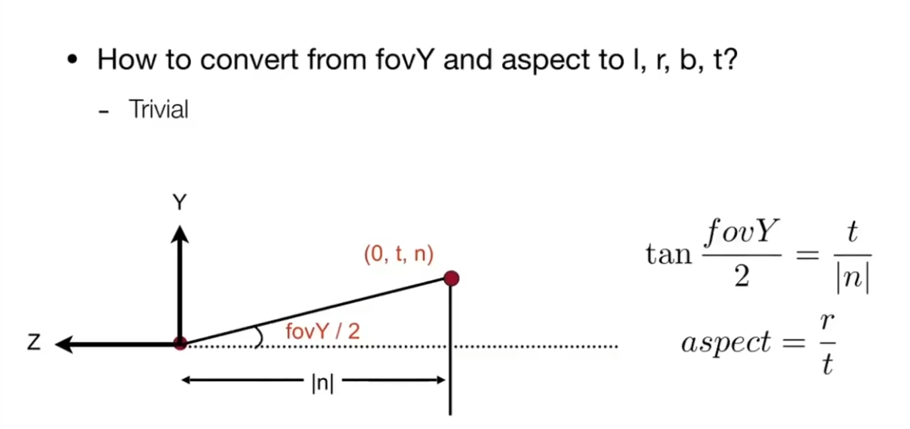
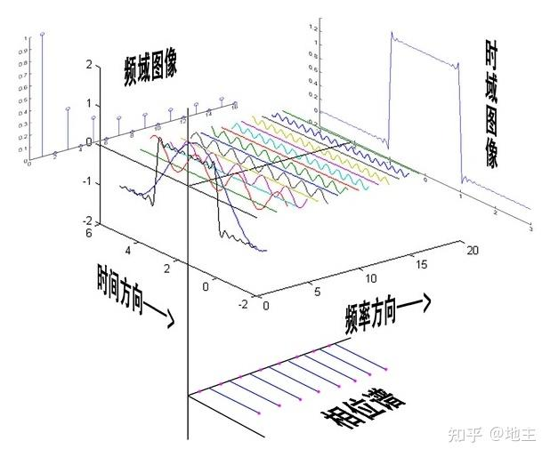
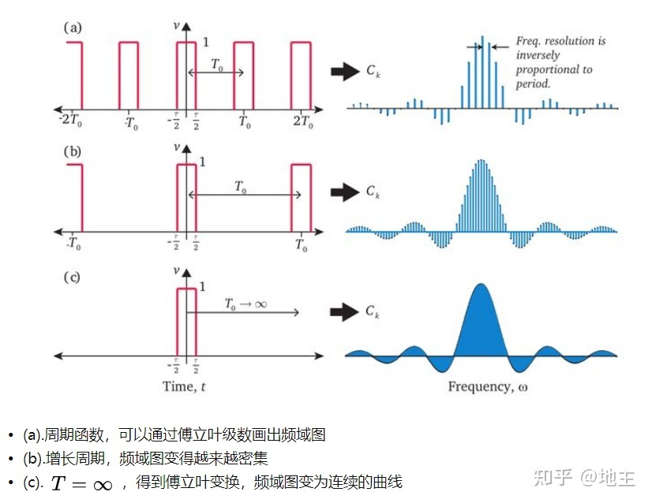
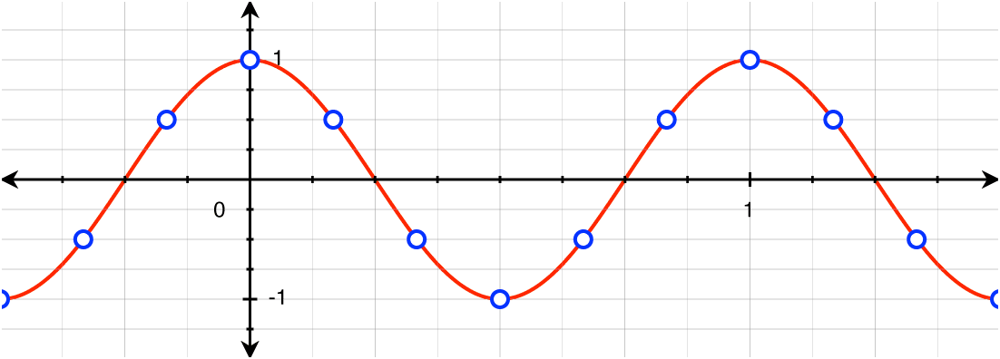
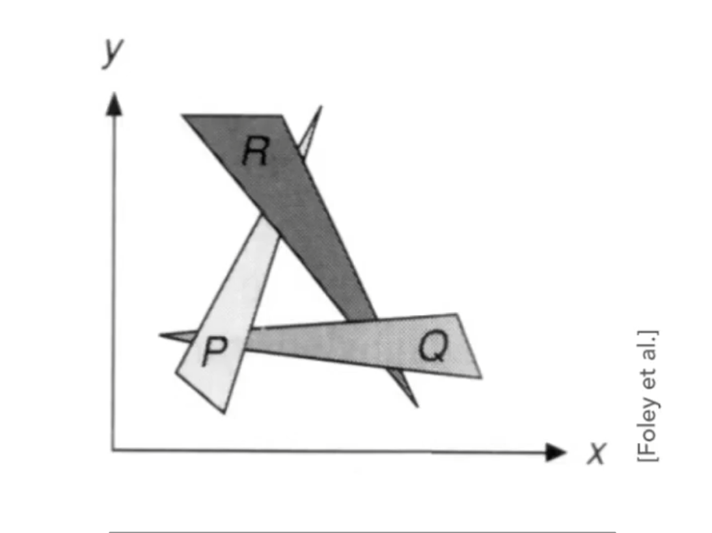
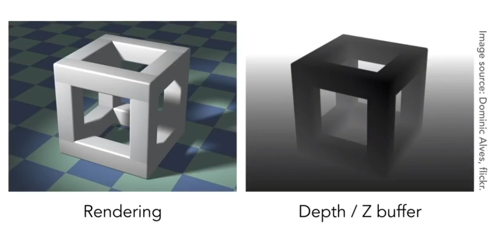
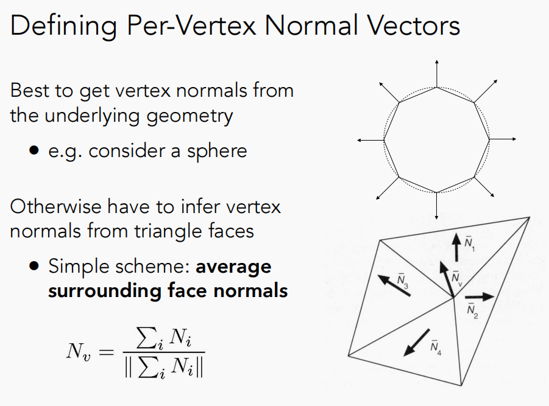

GAMES101Notes
Leture 3 Transform
- Modeling
->transformation, rotation, scaling
eg. Camera & IK - Viewing
-> (3D to 2D)projection
Scale
Reflection Matrix
Shear Matrix
Rotate(abount origin$(0,0)$,CCW by default)『绕原点，逆时针』
Linear Transform = Matrices(of the same dimension)『相同』
Translation
显然，平移不是线性变换
但是我们想要有一个大统一的概念可以描述这些变换
Homogeneous Coordinates『齐次坐标』
Add a third coordinate $w$ to $(x,y)$
- 2D point: $= (x,y,1)^T$
- 2D vector: $= (x,y,0)^T$
Maxtrix representation of translation
$w$ 的意义是什么呢？
In homogeneous coordinates, $\begin{bmatrix}x \y \w \\end{bmatrix}$ is the 2D point$\begin{bmatrix}\frac{x}{w} \\frac{y}{w} \1\end{bmatrix}, w \neq 0$
2D transformations
scale
rotate
shear
$
H(a,b) = \begin{bmatrix}
1 & a & 0 \
b & 1 & 0 \
0 & 0 & 1 \
\end{bmatrix}
$
translate
$
T(t_x,t_y) = \begin{bmatrix}
1 & 0 & t_x \
0 & 1 & t_y \
0 & 0 & 1 \
\end{bmatrix}
$
Inverse transform
逆变换刚好对应逆矩阵
Lecture 4 Transformation Cont
当一个矩阵的逆等同于他的伴随矩阵，那么这个矩阵是正交矩阵。
旋转矩阵是正交矩阵
3D transformations
- Scale
$
S(s_x,s_y,s_z) = \begin{bmatrix}
s_x & 0 & 0 & 0 \
0 & s_y & 0 & 0 \
0 & 0 & s_z & 0 \
0 & 0 & 0 & 1 \
\end{bmatrix}
$ - Translate
$
T(t_x,t_y,t_z) = \begin{bmatrix}
1 & 0 & 0 & t_x \
0 & 1 & 0 & t_y \
0 & 0 & 1 & t_z \
0 & 0 & 0 & 1 \
\end{bmatrix}
$ - Rotate(Around x-, y-, z-axis)
$
R_x(\theta) = \begin{bmatrix}
1 & 0 & 0 & 0 \
0 & cos\theta & -sin\theta & 0 \
0 & sin\theta & cos\theta & 0 \
0 & 0 & 0 & 1 \
\end{bmatrix}\
$
$
R_y(\theta) = \begin{bmatrix}
cos\theta & 0 & sin\theta & 0 \
0 & 1 & 0 & 0 \
-sin\theta & 0 & cos\theta & 0 \
0 & 0 & 0 & 1 \
\end{bmatrix}\
$
$
R_z(\theta) = \begin{bmatrix}
cos\theta & -sin\theta & 0 & 0 \
sin\theta & cos\theta & 0 & 0 \
0 & 0 & 1 & 0 \
0 & 0 & 0 & 1 \
\end{bmatrix}
$
Rodrigues’ Rotation Formula『罗德里格斯旋转公式』
Rotation by angle $\alpha$ around axis $n$
$
\boldsymbol {R}(\boldsymbol {n},\alpha) = cos(\alpha)\boldsymbol {I} + (1-cos(\alpha))\boldsymbol {nn}^T + sin(\alpha)N\
N = \begin{bmatrix}
0 & -n_z & n_y \
n_z & 0 & -n_x \
-n_y & n_x & 0 \
\end{bmatrix}
$
Viewing transformation『观测变换』
View / Camera transformation『视图变换』
Projection transformation『投影变换』
Orthographic projection『正交投影』
- 相机置于原点，面朝 -z 轴
- 丢掉 z 轴
- Translate and scale to $[-1,1]^2$
In general
- We want to map a cuboid $[l,r] \times [b,t] \times [\boldsymbol f,\boldsymbol n]$ to the “canonical” cube$[-1,1]^3$
Transformation matrix
Translate(center to origin) -> Scale(length/width/height to 2)
$
M_{ortho} = \begin{bmatrix}
\frac{2}{r-l} & 0 & 0 & 0 \
0 & \frac{2}{t-b} & 0 & 0 \
0 & 0 & \frac{2}{\boldsymbol n-\boldsymbol f} & 0 \
0 & 0 & 0 & 1 \
\end{bmatrix}
·
\begin{bmatrix}
1 & 0 & 0 & -\frac{r+l}{2} \
0 & 1 & 0 & -\frac{t+b}{2} \
0 & 0 & 1 & -\frac{\boldsymbol n+\boldsymbol f}{2} \
0 & 0 & 0 & 1 \
\end{bmatrix}
= \begin{bmatrix}
\frac{2}{r-l} & 0 & 0 & -\frac{r+l}{r-l} \
0 & \frac{2}{t-b} & 0 & -\frac{t+b}{t-b} \
0 & 0 & \frac{2}{\boldsymbol n-\boldsymbol f} & -\frac{\boldsymbol n+\boldsymbol f}{\boldsymbol n-\boldsymbol f} \
0 & 0 & 0 & 1 \
\end{bmatrix}
$
Perspective projection『透视投影』
- First “aquish” the frustum into a cuboid $(n \rightarrow n, f \rightarrow f)(M_{persp \rightarrow ortho})$
- Do orthographic projection
In order to find a transformation
- Find the relationship between transformed points $(x’,y’,z’)$
and original points $(x,y,z)$ - $y’ = \frac{n}{z}y\ x’ = \frac{n}{z}x$ —> similar to $y’$
- Find the relationship between transformed points $(x’,y’,z’)$
- In homogeneous corrdinates
$
\begin{bmatrix}
x \
y \
z \
1 \
\end{bmatrix} \xrightarrow{M_{persp \rightarrow ortho}}
\begin{bmatrix}
\frac{n}{z}x \
\frac{n}{z}y \
unknown \
1 \
\end{bmatrix} \xlongequal{mult. by z}
\begin{bmatrix}
nx \
ny \
unknown \
z \
\end{bmatrix}
$
显然，我们可以逆推出 $M_{persp \rightarrow ortho}$ 长这样
$
M_{persp \rightarrow ortho} =
\begin{bmatrix} n & 0 & 0 & 0 \
0 & n & 0 & 0 \
? & ? & ? & ? \
0 & 0 & 1 & 0 \
\end{bmatrix}
$
近和远处的 $z$ 不会发生变化
把 z 代换成 n，n 是我们取得特殊定值
$
\begin{bmatrix}
x \
y \
z \
1 \
\end{bmatrix} =
\begin{bmatrix}
nx \
ny \
unknown \
z \
\end{bmatrix} \xrightarrow{replace\space z\space with\space n}
\begin{bmatrix}
x \
y \
n \
1 \
\end{bmatrix} \rightarrow
\begin{bmatrix}
nx \
ny \
n^2 \
n \
\end{bmatrix}
$
我们现在要求解第三行，且我们知道 x 轴和 y 轴对 z 轴没有影响, 因为最终的结果中没有 x 和 y
$
\begin{bmatrix}
0\space 0\space A\space B
\end{bmatrix}
·
\begin{bmatrix}
x \
y \
n \
1 \
\end{bmatrix} =
n^2
$
我们可以推出
$
\begin{bmatrix}
0 & 0 & A & B
\end{bmatrix}
·
\begin{bmatrix}
x \
y \
n \
1 \
\end{bmatrix} =
n^2 \Rightarrow
An + B = n^2
$
我们又知道任何点的 z 坐标在远平面上都不会变化，所以我们可以推出
$
\begin{bmatrix}
0 \
0 \
f \
1 \
\end{bmatrix} \Rightarrow
\begin{bmatrix}
0 \
0 \
f \
1 \
\end{bmatrix} ==
\begin{bmatrix}
0 \
0 \
f^2 \
f \
\end{bmatrix} \Rightarrow
Af + B = f^2
$
解得
$
A = n+f \
B = -nf
$
所以
$
M_{persp \rightarrow ortho} =
\begin{bmatrix} n & 0 & 0 & 0 \
0 & n & 0 & 0 \
0 & 0 & n+f & -nf \
0 & 0 & 1 & 0 \
\end{bmatrix}
$
$
M{persp} = M{ortho} · M_{persp \rightarrow ortho} =
\begin{bmatrix}
\frac{2}{r-l} & 0 & 0 & -\frac{r+l}{r-l} \
0 & \frac{2}{t-b} & 0 & -\frac{t+b}{t-b} \
0 & 0 & \frac{2}{\boldsymbol n-\boldsymbol f} & -\frac{\boldsymbol n+\boldsymbol f}{\boldsymbol n-\boldsymbol f} \
0 & 0 & 0 & 1 \
\end{bmatrix}
·
\begin{bmatrix} n & 0 & 0 & 0 \
0 & n & 0 & 0 \
0 & 0 & n+f & -nf \
0 & 0 & 1 & 0 \
\end{bmatrix} =
\begin{bmatrix}
\frac{2n}{r-l} & 0 & \frac{r+l}{r-l} & 0 \
0 & \frac{2n}{t-b} & \frac{t+b}{t-b} & 0 \
0 & 0 & \frac{n+f}{n-f} & \frac{2nf}{n-f} \
0 & 0 & 1 & 0 \
\end{bmatrix}
$
Rasterization(Triangles)光栅化
定义 field of view(fovY)垂直的可视角度 和 aspect ratio(w/h)屏幕长宽比

n:near, t:top, b:bottom, l:left, r:right
视口变换
Sample 『采样』
- Sample if center of pixel is inside triangle
1 | int Inside(tri,x,y) => Point(x,y) in tri ? 1 : 0; |
采样率低 => 走样 => 锯齿…
Anti-aliasing『反走样/抗锯齿』
采样之前做一个滤波(filtering)
- Frequency『频率』
- Frequency domain『频域』
数字信号处理相关的前置知识
傅里叶变换 => 把函数从时域转换到频域

- Low-pass filter『低通滤波器』
- High-pass filter『高通滤波器』
- Band-pass filter『带通滤波器』
- Band-stop filter『带阻滤波器』
- Gaussian filter『高斯滤波器』
- Box filter『盒子滤波器』
…
Filtering = Convolution『卷积』= Average『平均』= Blurring『模糊』
时域卷积 = 频域乘积

采样是重复原始信号的频谱
- 采样定理:
在进行模拟/数字信号的转换过程中，当采样频率fs.max大于信号中最高频率fmax的2倍时(fs.max>2fmax)，采样之后的数字信号完整地保留了原始信号中的信息，一般实际应用中保证采样频率为信号最高频率的2.56～4倍；采样定理又称奈奎斯特定理。
这篇文章很好地解释了为什么”对于一个连续的信号采样，采样后的频谱相当于将采样前的频谱进行延拓”
A visual explanation of aliasing and repetition with the DTFT
时域采样得到的离散信号并不只代表这个时域信号，有无数多个频率不同的信号的采样结果是一样的，也就导致了频域上的周期延拓
有无数个高频分量可以匹配相同的离散数据，因此离散信号的频域包含所有这些频率。

当延拓的图形重合的时候，我们就认定这时候发生了走样。
要反走样，最直接的办法就是增加采样率，在现实中的意义就是“换一个更好的分辨率更好的显示器”（让图形之间离得更远）
从算法/软件角度来说，我们也可以采用之前的在采样前添加滤波的方法。我们可以给图像添加一个低通滤波，把高频的信息去掉。（让图形更瘦）
Antialiasing By Supersampling『超采样』(MSAA)
将一个像素近似认为更多的像素 => 给一个像素内部增加更多的采样点
=> 工业界的做法
Fast Approximate Antialiasing『快速近似反走样/抗锯齿』(FXAA)
图像的后期处理 => 通过图像匹配的办法把存在锯齿的边界找到，并且更换成没有锯齿的边界 => 效率高
Temporal Antialiasing『时域反走样/抗锯齿』(TAA)
静态场景中 => 复用上一帧感知的结果 => 相当于把 MSAA 对应的样本分布在了时间上，并且在当前帧没有引入任何额外操作
Z-buffering『深度缓冲』
Painter’s Algorithm『画家算法』
基本思想
先将画面中的物体按其距离观察点的远近进行排序，结果存放在一张线形表中。距观察点远者称其优先级高，放在表头,距观察点近者称其优先级低，放在表尾，这张表称为深度优先级表。
然后按照从表头到表尾的顺序逐个绘制物体。由于距观察者近的物体在表尾最后画出，它覆盖了远处的物体，最终在屏幕上产生了正确的遮挡关系。
缺陷

Z-Buffer
- frame buffer 存贮当前看到的场景
- depth buffer 存储每个像素所看到的几何物体最浅的深度的信息

1 | Initialize depth buffer to +∞ |
处理不了透明物体
Shading『着色』
The process of applying a material to an object.
Blinn–Phong reflection model『布林-冯反射模型』
经验模型
- Ambient『环境光』
- Diffuse『漫反射』
- Specular『镜面反射/高光』
Compute light reflected toward camera at a specific shading point
Inputs:
- Viewer direction，观察方向，使用v表示
- Surface normal，法线方向，使用n表示
- Light direction，光线方向，使用l(小写的L)表示

Shading is Local => 着色不考虑其他物体的影响，只考虑着色点自身，故而只有明暗，没有阴影
Diffuse Reflection
从接收角度看：
In general, light per unit area is proportional to the cosine of the angle between the light direction and the surface normal => $\cos\theta=l\cdot n$
从输出角度看
光的能量会在传播中被“稀释”，一个单位面积上接收到的光的能量和光线传播的距离的平方成反比 => $I/r^2$ => 球！
综合来看
$L_d$ is diffusely
$k_d$ is diffuse coefficient(color)
$I/r^2$ is energy arrived at the shading point
$max(0,\vec{n}\cdot\vec{l})$ is energy recevied by the shading point
观察方向对漫反射像完全没有影响 => 因为反射是完全随机的，因此可以认为漫反射光在任何反射方向上的分布都是一样的
Specular highlights

观察方向接近反射方向的时候才能观察到高光像
v close to mirror direction(观察方向接近反射方向) <=> half vector near normal(半程向量接近法线向量)
$\alpha$ is the angle between $\vec{h}$ and $\vec{n}$
$p$ is the shininess coefficient => Increasing p narrows the reflection lobe 『增大 p 可以缩小反射波瓣』 => 取值范围(100,200)
Ambient lighting
环境光可以被简单的视为一个常数，尤其是在 Blinn–Phong model 中，但实际上他比这复杂得多
$L_a$ is reflected ambient light
$k_a$ is ambient coefficient

将所有的项都加起来
Shading Frequency『着色频率』
- 每个平面做一次shading => Flat shading
- 每个顶点做一次shading => Gouraud shading
- 每个像素做一次shading => Phong shading
顶点法线
下图展示了一个简单的求法

把目标顶点所关联的面的法线向量求和取平均，即可得到目标顶点的法线向量
如果对三角形面进行加权，可以得到更精确的计算结果
像素法线
已经得知了顶点法线后，问题可以转化为如何得到三角形面内部的一个平滑过渡的法线(假设三角形面大于至少一个像素) => 重心坐标 + 归一化
Graphics (Real-time Rendering) Pipeline『图形管线』

shader toy
GPU 高度并行化处理
Texture Mapping『纹理映射』
在纹理上定义一个坐标系(u,v)(就是我们常说的 UV)，然后把纹理坐标映射到纹理上 => u 和 v 的取值范围是[0,1]
纹理要设计好在上下左右重复的时候无缝衔接 => tiled => method eg. Wang tiling
Interpolation『插值』
Barycentric Coordinates『重心坐标』

如果 $\alpha,\beta,\gamma$ 的和为1，那么点一定和三角形在同一平面，如果三者的值都大于0，那么点一定在三角形内。
原理的数学证明：
设笛卡尔坐标系下某一平面内三点$A,B,C,P$.
向量$\vec{OP}$ 可以表示为 $\vec{OC}+m\vec{CB}+n\vec{BA}=(1-m)\vec{OC}+(m-n)\vec{OB}+n\vec{OA}$
故
$\alpha=n\\beta=m-n\\gamma=1-m$
显然，$\alpha+\beta+\gamma=1$
在平面$ABCP$内，向量$\vec{OP}$ 仍然可以表示为 $\vec{OC}+m\vec{CB}+n\vec{BA}=(1-m)\vec{OC}+(m-n)\vec{OB}+n\vec{OA}$
要让 P 在 ABC 内，显然要使 m 的取值范围取 (0,1)，n 的取值范围取 (0,m)